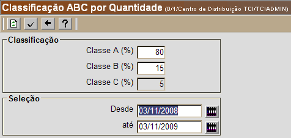
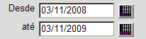
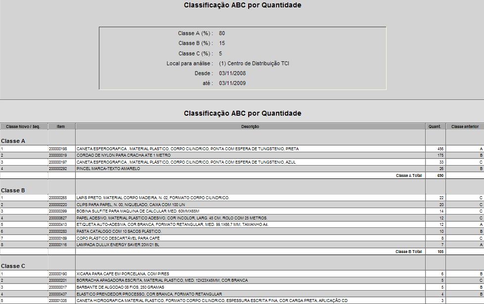

Classificação ABC [ Voltar ]Este formulário permite a geração de: a) a classificação
ABC dos produtos pela
quantidade de expedições, que permite que o
armazém seja
organizado em função dos produtos com maior volume de saídas, de
maneira que a localização destes seja estratégica e permita maior
facilidade e agilidade nas movimentações do armazém; e
b) a classificação ABC pelo valor dos produtos, que permite ao gestor um maior conhecimento de quais são os produtos que representam maior custo dentro do estoque. Devido ao alto valor destes produtos, é importante dar a eles atenção especial e estar especialmente atento aos seus prazos de validade.
O sistema exibirá a seguinte tela: Com um clique, selecione na tela o tipo de classificação desejada. Para o guia passo-a-passo, clique em uma das classificações abaixo: Classificação ABC por Quantidade Classificação ABC por Valor Classificação ABC por Quantidade

Para gerar a classificação ABC dos produtos pela quantidade de expedições, siga os passos abaixo: 1º Passo: informe a porcentagem das classes A, B e C. Na figura acima, na Classe A devem constar os produtos cujas expedições representam 80% do volume total de saídas do armazém. De acordo com o exemplo, a Classe B deve incluir aqueles produtos cujo número de expedições não é tão volumoso para constar na classe A, mas que apresentam um volume intermediário de saídas e representam 15% das expedições. O total da Classe C é definido pelos valores de A e B (o total de A, B e C deve somar 100) e representará aqueles produtos com menor volume de expedições. 2° Passo: defina o período desejado para a classificação ABC por quantidade de expedições. Clique no botão  [Data] para selecionar as
datas desejadas ou: [Data] para selecionar as
datas desejadas ou:

3º Passo: clique no botão 
Classificação ABC por Valor [ Voltar ]
Para gerar a classificação ABC dos produtos pelo valor, siga os passos abaixo: 1º Passo: informe a porcentagem das classes A, B e C. Na figura acima, na Classe A devem constar os produtos cujos preços representam 80% do valor total do estoque. De acordo com o exemplo, a Classe B deve incluir aqueles produtos cujo valor não é tão alto para constar na classe A, mas que apresentam um valor intermediário e representam 15% do valor total do estoque. O total da Classe C é definido pelos valores de A e B (o total de A, B e C deve somar 100) e se constitui dos produto de menor valor. 2° Passo: defina o período desejado para a
classificação ABC por quantidade de expedições. Clique no botão
3º Passo: informe se o cadastro dos produtos deve ser alterado em função desta classificação. 4º Passo: clique no botão |